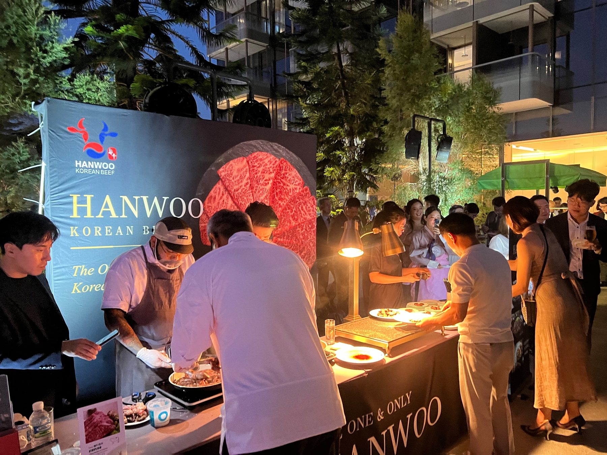
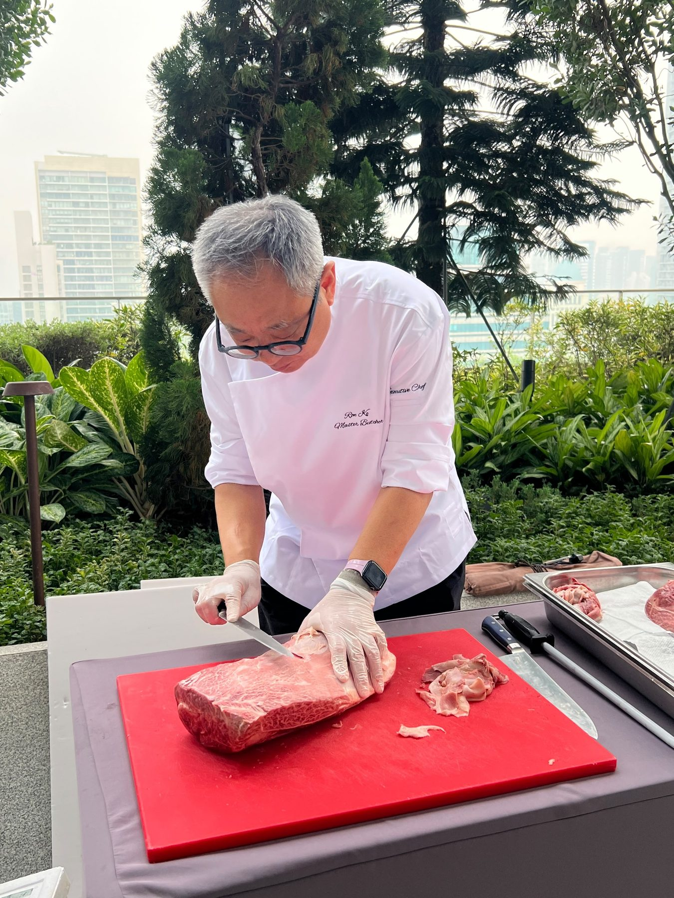
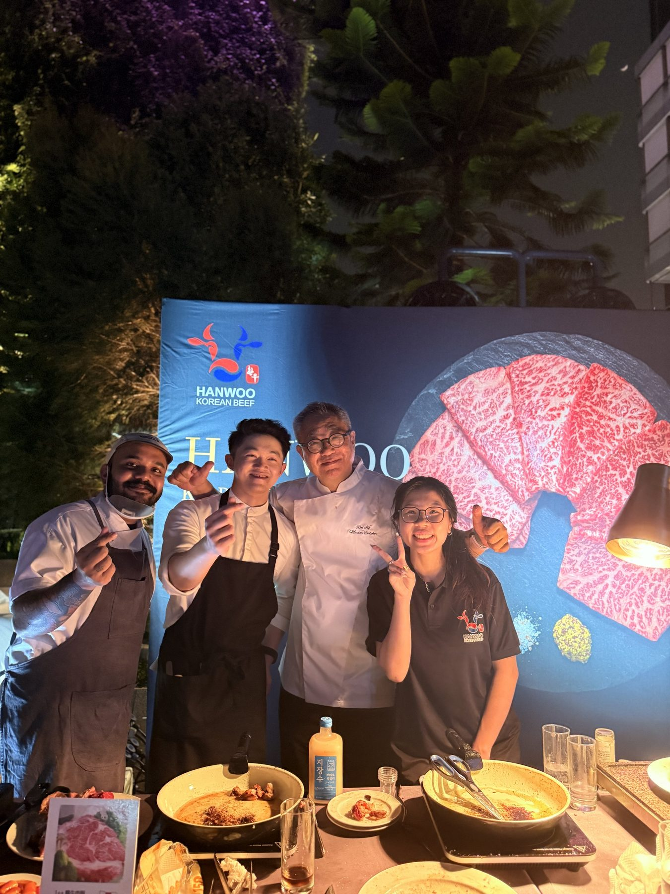

2026 · October
Hanwoo, from embassy reception to rooftop grill
SingaporeFive days of work with the Korean Embassy, Bidfood and a local distributor — ending with an outdoor masterclass where guests watched a whole sirloin come apart, then ate it straight off the grill.
- Korean Embassy — National Foundation Day reception, Hanwoo booth and service
- Bidfood Singapore — showroom session with the procurement team
- Distributor shelf review — smoked Iberico and duck
- Outdoor Hanwoo masterclass and evening grill tasting